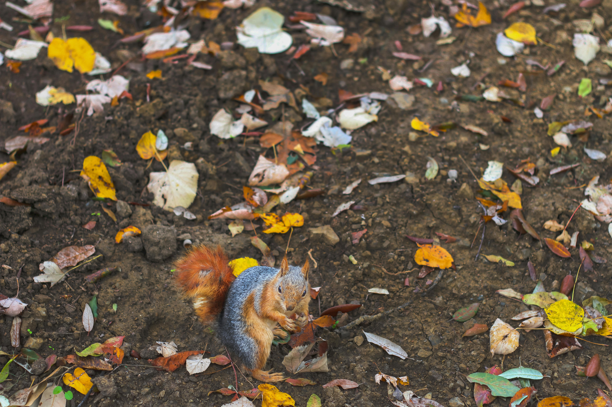

Это первый абзац текста. Мы проводим эксперимент по изучению явления Layout Shift. Когда изображение загружается, текст под ним может "прыгать", если у картинки не указаны ширина и высота. Это негативно влияет на пользовательский опыт.
Второй абзац. Представьте, что вы читаете статью, а в какой-то момент весь текст резко сдвигается вниз. Вы теряете место, где остановились, и случайно нажимаете на рекламу. Вот почему важно бороться со смещением макета.
Третий абзац. CLS (Cumulative Layout Shift) — это метрика, которую учитывает Google при ранжировании сайтов. Чем меньше скачет страница при загрузке, тем лучше для SEO и для пользователей.
Четвёртый абзац. Медленный интернет только усугубляет проблему: чем дольше загружается картинка, тем позже произойдёт неприятный скачок. Пользователи на мобильных устройствах страдают от этого чаще всего.
Пятый абзац. Давайте посмотрим, что произойдёт, когда загрузится большое изображение. Обратите внимание на текст ниже картинки — в этой версии он должен "прыгнуть".

Этот текст находится под картинкой. В версии без width/height он должен резко дёрнуться вниз в момент загрузки изображения. Попробуйте замедлить интернет в инструментах разработчика и обновить страницу.
Второй абзац под картинкой. Эксперимент наглядно демонстрирует, почему всегда нужно указывать размеры для всех изображений на сайте. Даже простое добавление width и height решает проблему.
Третий абзац под картинкой. Браузер заранее резервирует место под картинку, только если знает её размеры. Иначе он сначала отрисовывает текст, а потом вставляет картинку — и всё едет.
Четвёртый абзац под картинкой. Эта проблема особенно актуальна для новостных порталов и блогов, где много изображений. Один неверный тег — и рейтинг падает.
Пятый абзац под картинкой. Теперь перейдите ко второй версии и сравните. Там текст под картинкой должен оставаться на месте.
Это первый абзац текста во второй версии. Здесь у картинки указаны ширина и высота. Браузер заранее знает, сколько места нужно зарезервировать, поэтому текст не должен прыгать.
Второй абзац. Обратите внимание: я написал тот же самый текст, что и в первой версии, но поведение страницы будет кардинально другим. Всё дело в двух маленьких атрибутах.
Третий абзац. width="800" и height="600" говорят браузеру: "оставь, пожалуйста, место 800 на 600 пикселей". Даже если картинка будет грузиться целую минуту, место под неё уже зарезервировано.
Четвёртый абзац. Это называется "резервирование места" и является лучшей практикой веб-разработки. Google даже включил это в свои рекомендации по оптимизации Core Web Vitals.
Пятый абзац. Теперь посмотрите на текст под картинкой. В этой версии он должен оставаться неподвижным, даже при очень медленном интернете.
Этот текст находится под картинкой в версии с width/height. Он не должен дёргаться при загрузке. Браузер уже зарезервировал место, поэтому текст остаётся на месте.
Второй абзац под картинкой. Разница между двумя версиями — это и есть эффект CLS. Теперь вы знаете, почему на собеседовании спрашивают про атрибуты width и height у картинок.
Третий абзац под картинкой. Всегда указывайте размеры изображений. Это простое правило спасёт пользователей от нервотрёпки, а ваш сайт — от штрафов со стороны поисковых систем.
Четвёртый абзац под картинкой. Спасибо за внимание! Надеюсь, эксперимент был наглядным и полезным.
Пятый абзац под картинкой. Если хотите закрепить результат, откройте инструменты разработчика, выберите Slow 3G и обновите страницу ещё раз.